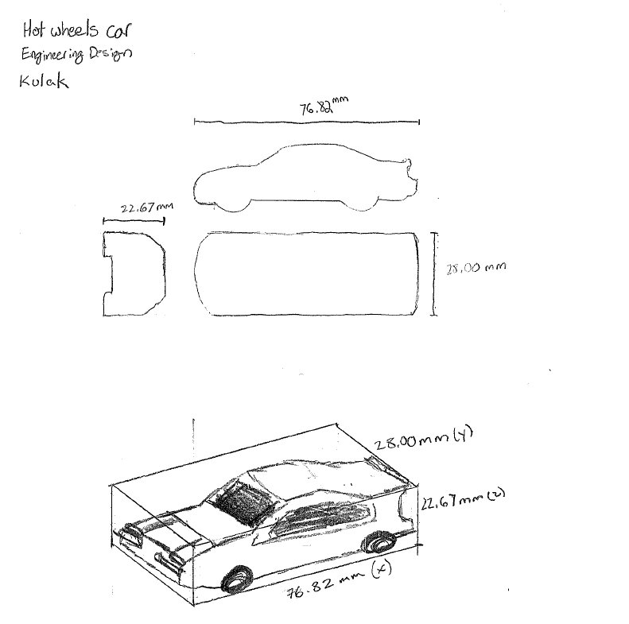
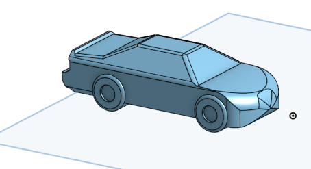
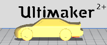
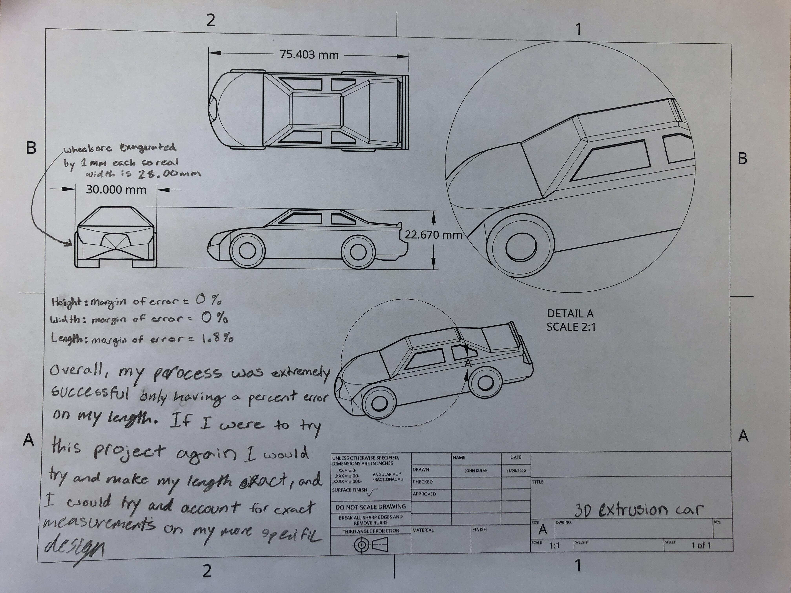
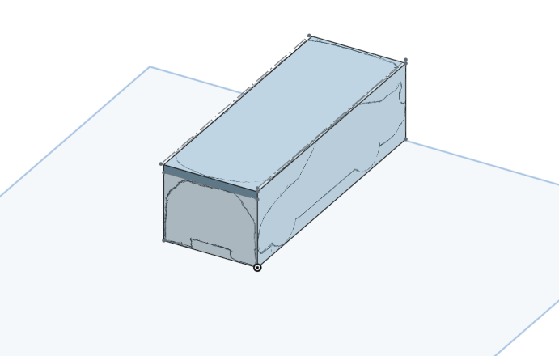

This reflection is all about my first 3D printing project where I had to replicate a Matchbox Car. We utilized a website called OnShape to design my car to be 3D printed.
Process:
Here are the project steps:
Design:
Obtain a matchbox car
Use calipers to measure the exact size (length, width, height) of the car
Use these measurements as well as your car to make a engineering drawing

Engineering Drawing
3D Modeling:
Use OnShape to create a box with the same dimesions of your car
Download sketches from your engineering drawing and trace them on each side of the box accordingly
Use the extrusion tool to remove space from the box to create car shape
Use other tools to refine your car and make it look as similar to the original model as possible by using fillets and other tools

OnShape finished car
Prepare and Slice File:
Create a CAD Drawing of the model
Prepare to slice the file in Cura

Cura: picture before slicing
3D Print:
Using the model from Cura, print the car
Compare to initial matchbox car and take notes on what you could have done better
Upload pictures to the slidedeck

CAD drawing with notes
Setbacks and Solutions:
Here are my setbacks:
In my personal opinion this has been one of my favorite projects yet; however, it was also the most challenging, so it came with its fair share of stuggles. The first setback I encountered came while I was working on my 3D envelope. I noticed(see picture below) that my engineering drawing was not the exact same measurements. As a result, my car could not be the exact measuremnts of the original car.
Another problem I ran into came while I was doing my fillets on my extruded car. While I was doing my fillets, there where multiple times when it would say that the fillets I wanted would not work, although it is what I needed for my car to look the best

3D envelope (setback)
Here are my solutions:
In response to my first problem I improvised. By that, I mean that since my engineering drawings were very close to the actually values of height,length,and width that I actually needed, I was able to expirement with tools and adjust things. This resulted in having a 0% margin of error in my height and width, and only having a 1.8% margin of error on my length.
In response to my second problem, I used bunch of expirementation. Since I really didn't know the tools that well I knew that if I expiremented for a bit, I would eventually come across what I needed to make my car look the best it could. After all of my expirements it turned out extremely well(see below).